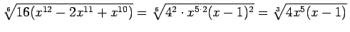

Jeder irrationale Ausdruck kann in der Regel auf eine einfachere Form gebracht werden, und zwar durch
Kürzen des Exponenten,
Vorziehen von Termen vor das Wurzelzeichen und
Beseitigen der Irrationalität im Nenner.
1. Kürzen des Exponenten:
Eine Kürzung des Exponenten wird erreicht, indem der Radikand in Faktoren zerlegt wird und danach der Wurzelexponent sowie die Exponenten aller Faktoren im Radikanden durch ihren größten gemeinsamen Teiler geteilt werden.
Beispiel
.
2. Beseitigen der Irrationalität:
Zur Beseitigung der Irrationalität im Nenner gibt es verschiedene Methoden.